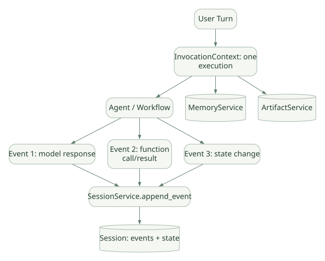

SECOND STUDY / 실행 계층과 요청 진입
실행 계층과 요청 진입
이번 단원의 읽는 관점
Runner·LlmAgent·Flow·Workflow·Services의 책임과 버전 경계를 나누고 Invocation을 추적합니다.
살펴볼 경계사용자 입력 한 건과 Invocation·Event·Session, 신규 요청과 Resume를 구분하세요.
이 페이지의 세부 목차
5. InvocationContext·Session·Event를 분리해서 생각하기#
가로로 이동해서 읽을 수 있습니다. 도식 크게 보기 ↗

원문의 학습용 도식입니다. 연결 방향·분기 조건·점선·쌍방향 연결을 보존해 세로로 배치했습니다. 실제 구현·의사코드·해석의 구분은 본문을 함께 읽으세요.
도식 원문 보기 (Mermaid)
flowchart LR
USER[User Turn] --> INV[InvocationContext: one execution]
INV --> AG[Agent / Workflow]
AG --> E1[Event 1: model response]
AG --> E2[Event 2: function call/result]
AG --> E3[Event 3: state change]
E1 --> SS[SessionService.append_event]
E2 --> SS
E3 --> SS
SS --> S[(Session: events + state)]
INV --> MEM[(MemoryService)]
INV --> ART[(ArtifactService)]| 객체 | 개념적 범위 | 소유·수명 | 주의점 |
|---|---|---|---|
InvocationContext |
실행 1회에 필요한 서비스, 현재 agent, 식별자, abort/resume | Runner 실행 문맥 | 장기 메모리 그 자체 아님 |
Event |
모델/도구/상태/그래프 실행의 한 기록·신호 | 생성 후 Runner/Session의 처리 | 모든 Event가 영구 저장되는 것은 아님 |
Session |
동일 사용자 대화의 이력과 State | SessionService | 한 Session에 여러 Invocation 가능 |
MemoryService |
여러 세션에 걸친 검색 저장소 | 별도 서비스 | Session 이벤트가 자동으로 전부 Memory에 색인된다고 가정하지 않음 |
ArtifactService |
파일·이미지·바이너리 등 버전 있는 결과물 | 별도 서비스 | State의 값과 실제 파일을 구별 |
핵심: ADK에서 ‘메모리’를 하나의 Dictionary처럼 설명하면 구조를 놓친다. 대화 이력 저장, 현재 상태, 검색 인덱스, 파일 보관의 책임이 다르다. [DOC: D03, D04]